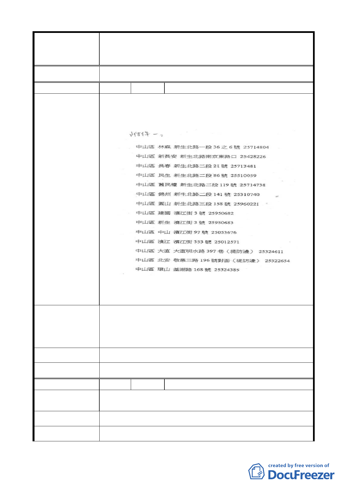

變更臺北市中山區北安段三小段 297-1 地號等20 筆高職
案 名 用地為機關用地（供國防部國防專區使用）及抽水站用地主
要計畫案
大 會 決 議 同編號 5 決議。
編 號 7 陳情人 劉校秀
1. 浪費國家公帑，增加不必要的人事成本。中山區抽水站
如附件。
陳情理由
2. 最近聽聞還未到夏季就已多處限水。
3. 地上人、事、物。
1. 就現有的抽水站擴充器材（老舊汰換）及定期檢驗並預
演應變能力。
建 議 辦 法 2. 節約用水，多想辦法解決既有的問題。
3. 先安置後拆遷。
市 府 回 覆 意 見 同編號 5（二）、（三）市府回應說明。
大 會 決 議 同編號 5 決議。
編 號 8 陳情人 劉豐銘
員山子分洪道現已完工使用，效果奇佳，功效已效，抽水站
陳 情 理 由 之興建大可不必，不用浪費公帑。
建 議 辦 法 停建改規劃其他用途。
市 府 回 覆 意 見 同編號 5（二）市府回應說明。
- 11 -